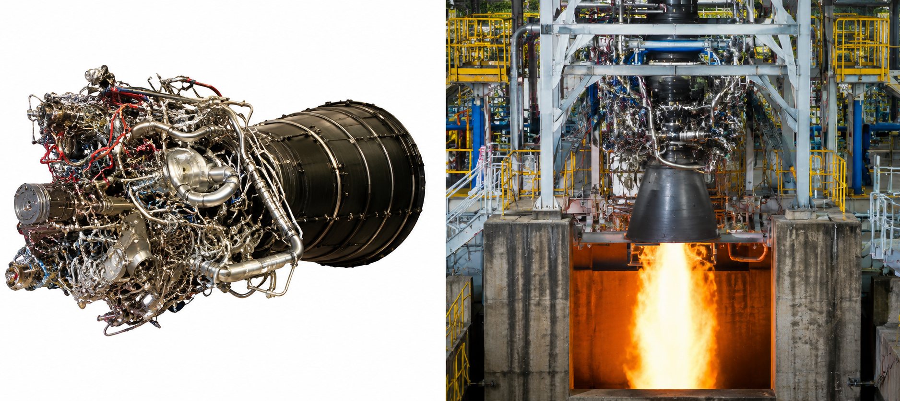
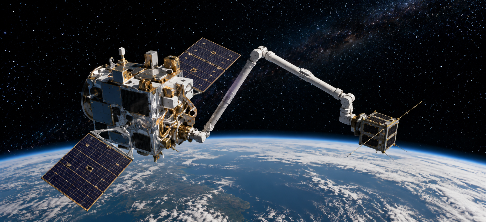
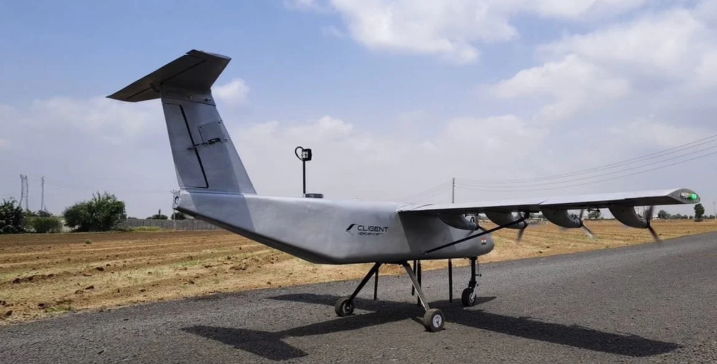
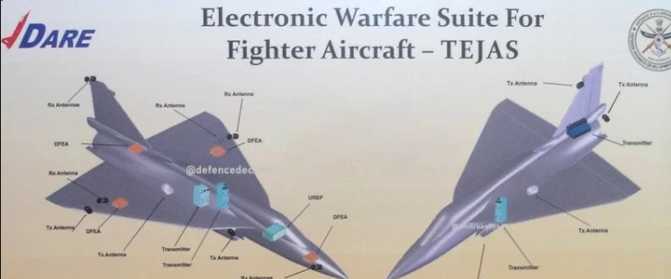
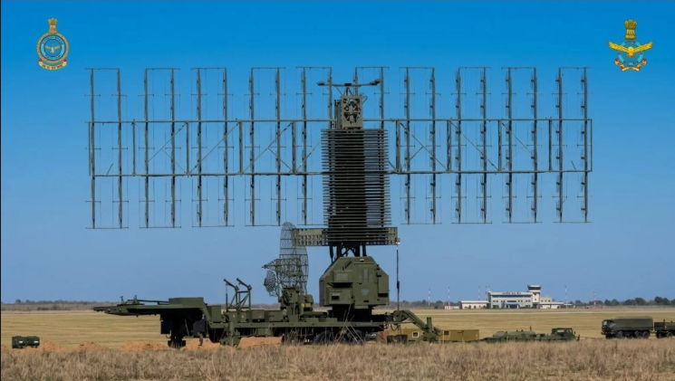
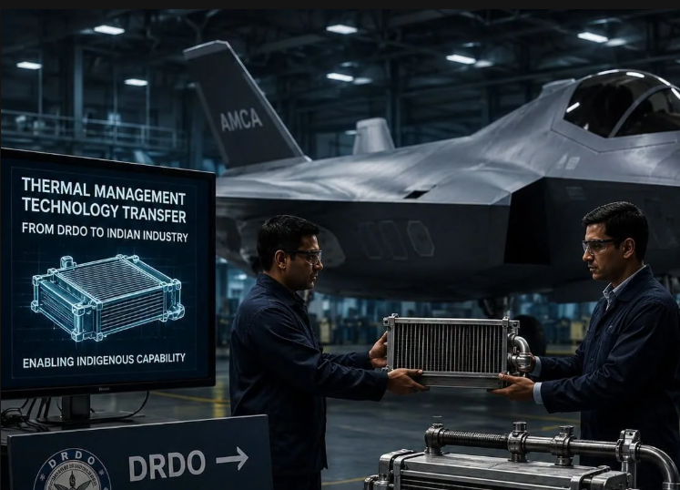
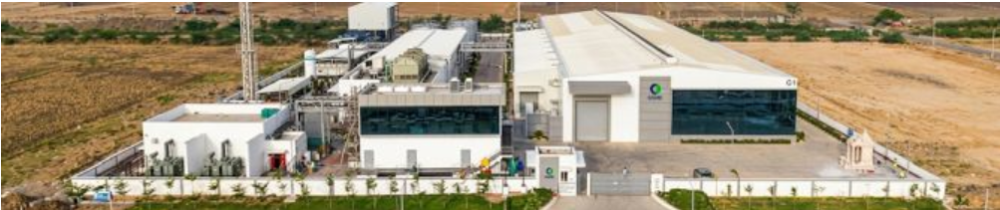
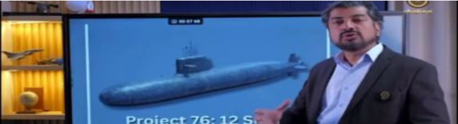
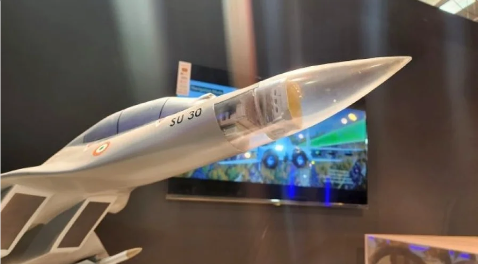

Quick defence technology cards and summaries will appear here.

DT#24
ISRO has successfully completed the Flight Acceptance Test of the CE20 cryogenic engine for the upcoming LVM3-M7 mission. Tested at the ISRO Propulsion Complex in Mahendragiri, the engine demonstrated satisfactory performance alongside a new Nozzle Protection System. The milestone strengthens India’s indigenous cryogenic propulsion capabilities and supports future heavy-lift, human spaceflight and commercial missions.(Jul7,2026)

DT#23
India’s Cosmoserve Space will launch its Mission Embrace payload aboard Skyroot Aerospace’s Vikram-1 rocket, aiming to demonstrate soft robotic capture technology for space debris removal in orbit. The indigenous robotic mechanism is designed to safely capture defunct satellites, paving the way for lower-cost debris removal missions and strengthening India’s position in orbital sustainability and private space innovation.(Jul8,2026)
DT#22
Mumbai-based Exicom has unveiled the Condor Lite 1W, an indigenous COFDM communication system designed for unmanned ground vehicles. Weighing under 85 grams, it supports secure long-range connectivity, self-healing mesh networks with up to 120 nodes, AES-256 encryption and real-time voice, video and data transmission. The rugged system strengthens India’s push for self-reliant defence and autonomous battlefield technologies.(Jul8,2026)
DT#21
India’s indigenous SARAS MK-2 regional aircraft has completed its design phase and is moving towards prototype manufacturing. Developed by CSIR-NAL, the 19-seater aircraft features a pressurised cabin, glass cockpit, digital avionics and advanced flight controls. Designed to strengthen regional connectivity under the UDAN scheme, SARAS MK-2 aims to reduce India’s dependence on imported short-haul passenger aircraft.(Jul7,2026)

DT#20
Ahmedabad-based Cligent Aerospace has successfully tested a scaled hybrid-electric eSTOL aircraft, achieving takeoff from an unpaved track in just 22 metres. The milestone validates technology behind the planned CL1000, a nine-passenger aircraft targeting operations from runways shorter than 150 metres. Designed for regional transport, cargo, disaster relief and defence logistics, commercial operations are targeted for 2029.(Jul7,2026)

DT#19
Mistral Solutions will reportedly begin supplying Exciter Receiver Processor units for India’s LCA Tejas Mk1A from November 2026. The company is contracted to deliver 122 units through March 2032 for the DRDO-developed Swayam Raksha Kavach electronic warfare suite. The systems will enhance the fighter’s threat detection, jamming coordination, and electronic self-protection capabilities, supporting India’s push for indigenous defence manufacturing.(Jul7,2026)

DT#18
Russia’s Nebo-UM VHF surveillance radar is strengthening integrated air defence networks by providing long-range detection of stealth aircraft and other airborne threats. Designed to complement systems such as the S-400, it can reportedly track conventional targets up to 600km away and detect low-observable aircraft at significant distances, enabling faster target acquisition and coordinated missile engagements.(Jul6,2026)

DT#17
India’s AMCA fifth-generation fighter programme has advanced towards industrial production after DRDO transferred two critical thermal management technologies to BHEL. The systems, developed for advanced aircraft including Tejas Mk2, will provide high-capacity cooling for radars, electronic warfare systems and onboard electronics. The technology transfer strengthens indigenous aerospace manufacturing capabilities and supports India’s Aatmanirbhar Bharat defence initiative.(Jul6,2026)
DT#16
ISRO has resolved the third-stage anomaly linked to the PSLV-C62 and PSLV-C61 mission failures, clearing the way for launches to resume from Sriharikota. An expert committee identified propulsion-related issues, while ground tests validated corrective measures. ISRO is now preparing for an upcoming GSLV mission, followed by a PSLV launch to demonstrate the vehicle’s restored reliability.(Jul6,2026)

DT#15
Prime Minister Narendra Modi has inaugurated CG Semi’s new semiconductor facility in Sanand, Gujarat, which has begun commercial production with an annual capacity of 200 million chips. Backed by over Rs. 7,600 crore in investment, the OSAT facility aims to significantly expand production, strengthen India’s semiconductor ecosystem, reduce import dependence and boost the country’s role in global chip supply chains.(Jul5,2026)

DT#14
India's indigenous RudraM-II anti-radiation missile has emerged as a major boost to the country's defence capabilities, offering a 350-km strike range and speeds of Mach 5.5. Developed by DRDO, the missile is designed to neutralise enemy air defences and reduce reliance on imported systems, strengthening India's self-reliance in advanced military technology.(Jun6,2026)

DT#13
India has unveiled the first look of the indigenous P-76 conventional submarine under Project-76, a program aimed at building 12 advanced stealth submarines. Featuring AIP, lithium-ion batteries, and cruise missile capability, the project is expected to strengthen India's undersea warfare capabilities and enhance maritime deterrence in the Indo-Pacific.(Jun6,2026)

DT#12
Astra Microwave Products has announced that the core Active Antenna Array Unit for India's Virupaksha AESA radar is nearing completion, with the full system expected by the end of 2026. Developed for the Indian Air Force's Super Sukhoi upgrade, the radar will significantly enhance the Su-30MKI's detection, tracking, and combat capabilities.(Jun6,2026)

DT#11
Divyastra Mk-1 successfully completed operational demonstrations in Jodhpur, including multiple launches from a vehicle-mounted mobile launcher, live ISR missions, and terminal attack profiles.Tested in desert temperatures exceeding 50°C and high winds, the platform demonstrated reliable performance under demanding field conditions. Designed, developed, and integrated in India.(Jun2,2026)

DT#10
India’s AMCA fighter is being designed with a modular engine bay, enabling future upgrades to sixth-generation propulsion systems. The approach supports long-term adaptability, sovereign technology control, indigenous development, and seamless integration of advanced AI, stealth, and drone capabilities.(Jun1,2026)

DT#9
Home Minister Amit Shah announced a new territorial security framework featuring a four-part security grid, advanced surveillance technologies, and public participation, aiming to strengthen border protection, close security gaps, and secure vulnerable regions within two years.(May30,2026)

DT#8
Goa Shipyard Limited has delivered ICGS Akshay, the fifth indigenous Fast Patrol Vessel for the Indian Coast Guard. Featuring over 65% local content, it strengthens maritime security, coastal surveillance, search-and-rescue capabilities, and India’s self-reliance in defense manufacturing. (May30,2026)

DT#7
Embraer is pitching the KC-390 for India’s MTA program, highlighting 30% lower operating costs than the C-130J, higher payload, and faster missions, while offering local manufacturing, MRO facilities, technology partnerships, and integration with India's defense industry.
(May30,2026)

DT#6
India's ₹70,000 crore Project-75I submarine programme has received approval from the Finance Ministry. The final clearance now awaits the PM-led Cabinet Committee on Security (CCS).
The first submarine, based on the HDW Class 214 design, is expected to be delivered around seven years after the contract is signed.(May29,2026)

DT#5
US firm Honeywell has delivered the first batch of three TPE331-12B turboprop engines for the overdue indigenous HTT-40 basic trainer aircraft to HAL.(May28,2026)

DT#4
The Defence Ministry today issued the Request for Proposal for the mega indigenous fifth-generation Advanced Medium Combat Aircraft (AMCA) project to the three shortlisted bidders, including Larsen and Toubro-Bharat Electronics Limited, Tata Advanced Systems and Bharat Forge-BEML(May27,2026)

DT#3
China secures full technological independence in single-crystal superalloys. China has joined an elite group of nations with complete control over the technology chain for the most critical component in aero-engines, reports China Media Group.(May26,2026)

DT#2
Defence Minister Rajnath Singh flagged off the Suryastra Universal Rocket Launcher System in Shirdi, Maharashtra.(May23,2026)

DT#1
India has inducted the RayStrike-9 directed energy weapon project into its defence sector, which is spearheaded by Paras Defence in collaboration with DRDO’s CHESS laboratory. The development has marked a significant leap in anti-drone and anti-missile technology.(May22,2026)